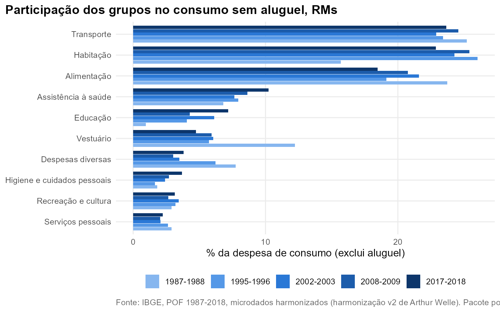

Pergunta. Como a despesa de consumo das famílias se distribui entre os grandes grupos de gasto, e como essa distribuição mudou entre 1987-1988 e 2017-2018?
Dados e método. Despesa de consumo no conceito do
IBGE: Níveis 1 a 26 da harmonização v2. Entre edições, o recorte é o
conjunto das regiões metropolitanas e o aluguel fica fora do consumo
(ver Começando). Participação estimada por
razão de totais ponderada (pof_participacao()), com IC de
95% do desenho amostral de 2002 em diante.
Resultados nas regiões metropolitanas
A alimentação cai de 23,7% do consumo sem aluguel em 1987-1988 para 18,5% em 2017-2018. Assistência à saúde sobe de 6,8% para 10,2%, e educação, de 4,1% em 1995-1996 para 7,2%. Vestuário cai de 12,2% para 4,7%.
1987-1988 pede cautela: além do aluguel, habitação sem aluguel (15,7%) fica bem abaixo de 1995-1996 (26,0%), e a educação daquela edição parece incompleta (a folha de cursos regulares não existe em 1987).

| Grupo | 1987-1988 | 1995-1996 | 2002-2003 | 2008-2009 | 2017-2018 |
|---|---|---|---|---|---|
| Alimentação | 23,7 | 19,1 | 21,6 | 20,8 | 18,5 |
| Assistência à saúde | 6,8 | 7,9 | 7,6 | 8,6 | 10,2 |
| Despesas diversas | 7,8 | 6,2 | 3,5 | 3,0 | 3,8 |
| Educação | 1,0 | 4,1 | 6,1 | 4,3 | 7,2 |
| Habitação | 15,7 | 26,0 | 24,3 | 25,4 | 22,9 |
| Higiene e cuidados pessoais | 1,8 | 1,7 | 2,4 | 2,7 | 3,7 |
| Recreação e cultura | 2,9 | 3,2 | 3,5 | 2,7 | 3,1 |
| Serviços pessoais | 2,9 | 2,6 | 2,1 | 2,1 | 2,2 |
| Transporte | 25,2 | 23,4 | 22,9 | 24,6 | 23,6 |
| Vestuário | 12,2 | 5,7 | 6,1 | 5,9 | 4,7 |
Brasil, 2002 a 2018
Com o conceito completo de consumo (aluguel incluído), comparável ao do IBGE:
| Grupo | 2002-2003 | 2008-2009 | 2017-2018 |
|---|---|---|---|
| Alimentação | 20,7 [20,3; 21,1] | 19,2 [18,9; 19,6] | 16,7 [16,3; 17,0] |
| Assistência à saúde | 6,5 [6,1; 6,8] | 7,1 [6,9; 7,4] | 8,0 [7,8; 8,2] |
| Despesas diversas | 2,8 [2,6; 3,0] | 2,6 [2,5; 2,8] | 2,9 [2,8; 3,1] |
| Educação | 4,1 [3,8; 4,3] | 3,0 [2,8; 3,1] | 4,7 [4,5; 5,0] |
| Habitação | 35,8 [35,3; 36,2] | 35,9 [35,4; 36,4] | 36,3 [36,0; 36,7] |
| Higiene e cuidados pessoais | 2,2 [2,1; 2,2] | 2,5 [2,4; 2,5] | 3,6 [3,5; 3,7] |
| Recreação e cultura | 2,4 [2,3; 2,5] | 2,0 [2,0; 2,1] | 2,4 [2,3; 2,4] |
| Serviços pessoais | 1,7 [1,6; 1,8] | 1,7 [1,6; 1,7] | 1,8 [1,7; 1,8] |
| Transporte | 18,4 [17,9; 18,8] | 20,5 [20,0; 20,9] | 19,3 [18,9; 19,7] |
| Vestuário | 5,7 [5,5; 5,8] | 5,5 [5,4; 5,7] | 4,3 [4,2; 4,4] |
A comparação com os números oficiais do IBGE está na vinheta Harmonização de produtos.
Reproduzir
b <- pof_somar_grupos(pof_ler_edicao(2017, dir, pof_harmonizacao()))
pof_participacao(b, pof_grupos_consumo()) # Brasil
bs <- pof_sem_aluguel(b)
pof_participacao(bs, pof_grupos_consumo(), filtro = quote(!is.na(RGMT))) # RMs